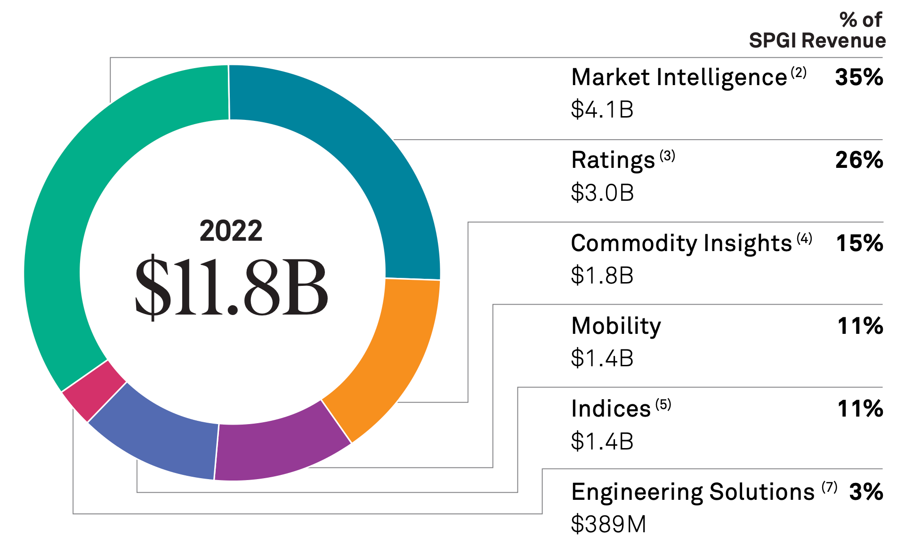

Étant assez peu connue de la part des investisseurs particuliers en Bourse, l'entreprise S&P Global est pourtant l'une des sociétés ayant l'une des plus influentes de la planète. La firme est en situation de duopole avec un autre acteur du marché, Moody's, et contrôlent à eux deux 80% des parts de marché du secteur. Secteur qui nous allons le voir est très lucratif et d'avenir.
Les origines de S&P Global remontent au milieu du 19ème siècle, et plus précisément en 1860. Cette année-là, Henry Varnum Poor publie History of Railroads and Canals in the United States, un livre fournissant des informations financières détaillées sur les différentes compagnies ferroviaires américaines. Cet ouvrage tente pour la première fois de l’histoire de fournir des données aux investisseurs sur ces compagnies ferroviaires, marquant ainsi le début de l’information financière. 8 ans plus tard, Poor republie un second ouvrage, le Manual of the Railroads of the United States. Publié chaque année de 1868 à 2924, chaque volume détaillait l’histoire, l’équipement et les finances des sociétés de chemins de fer des États-Unis.
Entre temps, en 1906, Luther Lee Blake fonde la Standard Statistics Company, qui a pour but de fournir des informations financières sur les entreprises non-ferroviaires. Au lieu de publier des livres annuels, le bureau distribue aux investisseurs des fiches contenant chacune des informations d'actualité, permettant des mises à jour plus fréquentes. Henry Poor et son fils, fondent également Poor’s Publishing. En 1916, cette société publie pour la toute première fois une notation de crédit, fournissant aux abonnés une évaluation sur la solvabilité des émetteurs. Standard Statistics fait de même à partir de 1922.

En 1941, Les 2 sociétés sont fusionnées par Paul Talbot Babson qui fonde Standard & Poor’s. Le 4 mars 1957, Standard & Poor’s crée l’iconique S&P 500 : Un indice boursier contenant les 500 plus grandes entreprises américaines de par leur capitalisation. Bien que le Dow Jones existait déjà, cet indice fut créé pour deux raisons majeures : le fait que ce nouvel indice serait plus représentatif du marché américain (500 vs 30 entreprises dans l’indice) et qu’il tient compte à la capitalisation boursière, contrairement au Dow Jones où les actions au prix plus élevé ont plus d'influence sur l'indice.
La société est ensuite rachetée en 1966 par The McGraw-Hill Companies, une puissante société américaine dans le domaine de l’éducation. Cependant, McGraw-Hill a choisi de conserver le nom Standard & Poor’s afin de préserver la notoriété et la bonne réputation de S&P, établies depuis des décennies. En 2013, McGraw annonce la vente de sa division Éducation à Apollo Global Management pour 2,5 milliards de dollars. À partir de ce moment-là, la firme ne détient plus que sa division financière, incluant Standard & Poor’s. En 2016, McGraw-Hill Financial est renommée S&P Global pour mieux aligner le nom de l'entreprise avec sa principale entité, Standard & Poor’s.

Depuis le 28 avril 2016, l'entreprise S&P Global est côtée au NYSE sous le ticker SPGI. Découvrons de plus près quelles sont les activités de S&P et quels sont ses avantages compétitifs qui rendent l'entreprise quasiment intouchable.
S&P Global possède 6 grandes sources de revenus différentes, listée de façon décroissante :

C'est la plus grande source de revenus du groupe. Pour investir, il est indispensable de disposer de données fiables et à jour. Investir en se basant sur des données erronées peut entraîner des pertes considérables. Pour cela, S&P Global est aujourd'hui le principal fournisseur de données financières au monde. S&P Global propose même une récompense à celui qui trouve une imprécision dans leurs données. La société fournit des données sous forme d'abonnement, via son outil S&P Capital IQ. Cet abonnement permet l'accès à pas moins de 62 000 sociétés publiques et à des dizaines de millions de sociétés privées.
Les clients de ce produit sont divers : particuliers, banques, gestionnaires de fonds, etc. Le taux de rétention de l'abonnement (96% en 2018) et les marges réalisées par S&P sont très élevés. On peut expliquer ce taux de rétention exorbitant par le fait que les produits de Market Intelligence sont profondément intégrés dans les flux de travail des clients. L'outil Capital IQ est reconnu pour sa fiabilité par les investisseurs du monde entier, bénéficiant ainsi d'un puissant effet de réseau. Ce segment d'activité de l'entreprise fournit un flux de trésorerie résilients alors que le capital déployé pour ce même segment est stable, donnant des retours sur capitaux excellents.

C’est l’activité la plus connue du grand public. Une notation de crédit est l’évaluation de la capacité d’un emprunteur à rembourser sa dette en temps voulu. S&P Global effectue des notations de crédit sur des entreprises et des États du monde entier. Ces notations sont cruciales pour les investisseurs, car elles influencent leurs décisions d’investissement, ainsi que pour les emprunteurs, car une meilleure notation leur permet d’emprunter à des taux plus bas. De nombreuses agences de notation existent dans le monde entier, mais S&P Global est l'une des plus influentes, comme nous le verrons par la suite.
S&P Global gagne de l’argent sur ses notations en prélevant des frais de notation payés par les émetteurs de dette. Ces frais couvrent le coût de l’analyse et de l’évaluation réalisées par S&P Global. Comme vous pouvez le voir ci-dessus, S&P Global attribue des scores allant de AAA à D pour les emprunteurs les plus risqués. C'est l'activité la plus cyclique de l'entreprise.
Cette segmentation des ventes est similaire à celle de Market Intelligence, mais cette fois, il s'agit d'informations sur les matières premières plutôt que de données financières. Ces informations sont indispensables pour les acteurs du marché des matières premières, tels que les producteurs, les commerçants, les investisseurs et les consommateurs industriels. Comme pour Market Intelligence, le modèle repose sur un système par abonnement, ce qui génère des revenus stables et diversifiés pour l'entreprise américaine.
C’est la troisième et dernière partie du chiffre d’affaires de la firme sur la vente de données financières. Cette partie représente 11% de celui-ci et fournit des données, analyses et informations importantes sur le marché de l’industrie automobile. Comme pour Market Intelligence et Commodity Insights, S&P vend ces données sous forme d’abonnements à des constructeurs, fournisseurs, concessionnaires et investisseurs. Les données fournies incluent, entre autres, les ventes de véhicules, les parts de marché, les tendances de l'industrie, les prévisions de marché et des informations sur le marché de l’occasion.

Comme mentionné précédemment, la filiale Standard & Poor's de S&P Global a fondé le S&P 500 en 1957. Encore aujourd’hui, S&P Global continue de détenir indirectement l'indice boursier le plus populaire au monde via S&P Dow Jones Indices LLC, une co-entreprise dont elle possède 73%. À travers S&P Dow Jones Indices LLC, S&P Global possède des centaines d’indices boursiers de tout les thèmes possibles et inimaginables (géographique, thématique, sectoriel,…). Grâce à la montée de l'investissement passif via les ETF, notre entreprise bénéficie également de cette tendance. Chaque fois qu'un ETF est basé sur un indice S&P, S&P Global perçoit régulièrement une part des frais de gestion. Cette diversification des revenus représente l'une des sources de revenus les plus rentables de l'entreprise. L’indice S&P 500 étant l’indice le plus populaire auprès des investisseurs particuliers, S&P dispose d’un oligopole naturel.
Maintenant que nous avons exploré les diverses sources de revenus de S&P Global, examinons de plus près ses avantages compétitifs pour comprendre pourquoi la société bénéficie de certains des avantages compétitifs les plus solides au monde.
De par ses différents secteurs d’activités tout autant intéressant les uns que les autres, la boite américaine possède de nombreux avantages concurrentiels la rendant pratiquement intouchable. Tout d’abord, voyons sa position sur le marché des notations. À l'heure actuelle, S&P Global fait partie de ce qu'on appelle le Big Three : ce sont le surnom donné aux 3 entreprises qui domine de très loin le marché des cotations. Ce big three, comme son nom l'indique, est composé de 3 sociétés : S&P Global, Moody's et enfin Fitch. À eux 3, ils contrôlent pas moins de 95% des parts de marché.

Le marché des notations de crédit est largement dominé par le duopole formé par Moody's et S&P Global. Les 2 boites n'imposent pas de grandes barrières à l'entrée puisque d'autres acteurs peuvent entrer/existent déjà sur le marché. Cependant, difficile pour d'autres acteurs d'hériter de la confiance des investisseurs. À quoi bon prendre les services d'une nouvelle agence de crédit si la réputation de S&P et Moody's parle d'elle-même ? Les notations de S&P Global sont maintenant utilisée par le monde entier depuis des décennies, sa crédibilité et sa fiabilité ne sont plus à prouver.
Venons maintenant aux données financières fournies par S&P Global. Comme vu plus haut, le taux de rétention des abonnements proposé par Market Intelligence, Commidity Insights et Mobility est très élevé, et c’est très bon signe pour nous investisseurs. Cela peut se traduire par le fait que les clients sont pleinement satisfait de l’outil fourni par S&P, et que se passer de ces données leur est très difficile, tant celles-ci sont profondément ancrées dans leur besoins aujourd’hui. C’est un exemple typique de switching costs, un type de moat qui contribue à la fidélisation des clients et assurent des revenus stables et récurrents pour S&P Global.

En détenant le S&P 500 via S&P Dow Jones Indices LLC avec la société américaine CME, S&P Global perçoit des commissions sur chaque frais de gestion prélevé par les différents gestionnaires d’ETF S&P 500. Ces revenus sont presque passifs et récurrents pour S&P, générés de manière constante. S&P bénéficie alors de deux grandes tendances : premièrement, l’augmentation continue du nombre de personnes investissant dans les ETF. Le nombre d’ETF est passé de 276 en 2003 à 8 754 en 2022, démontrant l’attrait croissant des investisseurs pour ces produits financiers. Cette tendance s’observe également avec l’évolution des actifs sous gestion pour les ETF à l'échelle mondiale de 2003 à 2022 ci-dessus. L’investissement en bourse se démocratise, favorisant ainsi l’investissement passif.

Deuxièmement, l’indice S&P 500 détient le plus gros montant d'actifs sous gestion à travers le monde, en faisant l’indice le plus populaire et le plus influent au niveau mondial. Impossible de venir concurrencer S&P sur ce terrain-là, à moins qu’une firme ne crée un nouvel indice, mais bonne chance pour qu’il devienne plus populaire que le S&P 500 auprès des investisseurs !